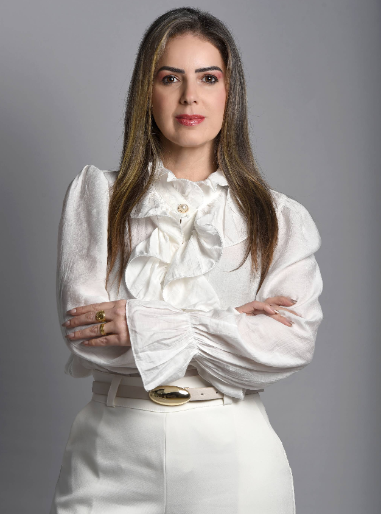
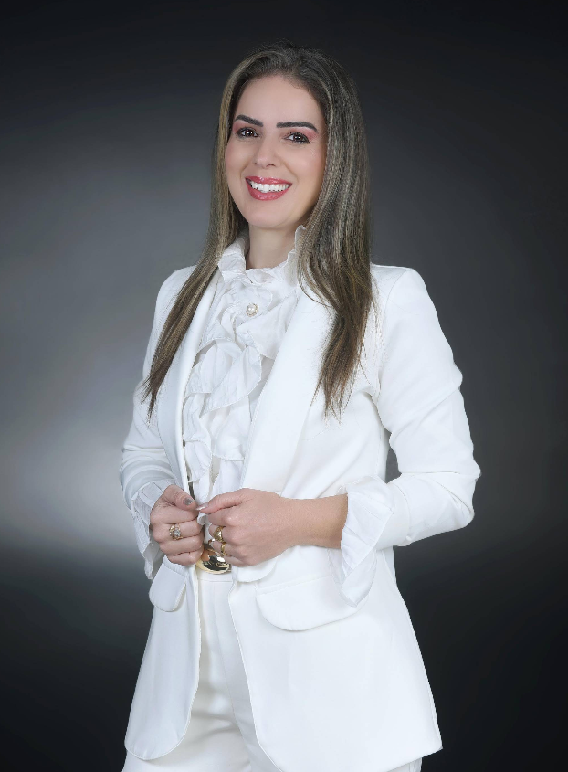
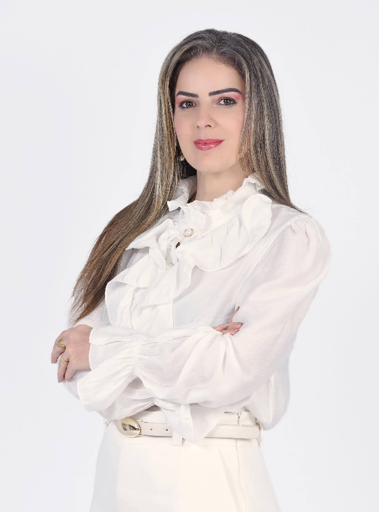

Atendimento Próximo e Humano
Cada plano de tratamento é pensado a partir da real necessidade de quem está na cadeira — sem pressa e sem fórmulas prontas.
Atendimento próximo, técnica apurada e um cuidado pensado para cada paciente — do primeiro contato ao resultado que você vê no espelho.
Atendimento particular · Resposta no mesmo dia
A Dra. Cristiane Fardim Murad atua em Lavras-MG oferecendo uma odontologia próxima, cuidadosa e tecnicamente precisa. Cada atendimento é conduzido com atenção ao histórico, às necessidades e ao ritmo de cada paciente — porque tratar bem começa por ouvir bem.


Cada plano de tratamento é pensado a partir da real necessidade de quem está na cadeira — sem pressa e sem fórmulas prontas.
Procedimentos conduzidos com precisão técnica, usando materiais e equipamentos que garantem diagnósticos mais exatos e resultados mais previsíveis.

Dra. Cristiane Fardim Murad
Harmonização Facial · CRO-MG 27161
Responsável técnica do consultório e referência em harmonização facial em Lavras, a Dra. Cristiane conduz cada tratamento com uma missão clara: cuidar do sorriso com a mesma atenção que teria com a própria família.
Cirurgiã-dentista inscrita no CRO-MG sob o número 27161.
Harmonização facial — evidenciando a beleza e mantendo a juventude com naturalidade.
Consultório confortável e acolhedor, projetado para reduzir a ansiedade e tornar cada visita mais tranquila.
Cada plano de tratamento é construído sob medida, respeitando sua anatomia, seu histórico e seus objetivos.
Agendamento simples pelo WhatsApp e horários pensados para caber na sua rotina.
Explicações transparentes sobre diagnóstico, tratamento e valores — sem surpresas.
Avaliação criteriosa para indicar o tratamento certo, evitando procedimentos desnecessários.
O cuidado não termina na cadeira do consultório — acompanhamento em cada etapa do tratamento.
Cuidado completo para todas as fases do seu sorriso, da prevenção à estética.
Remoção profissional de placa e tártaro para manter a saúde bucal em dia e prevenir problemas futuros.
Saiba mais →Um sorriso mais claro e uniforme, com procedimento seguro e acompanhamento profissional.
Saiba mais →Lâminas finas que corrigem cor, formato e pequenas imperfeições, com resultado natural.
Saiba mais →Técnica precisa para eliminar a dor e preservar o dente natural com segurança.
Saiba mais →Reabilitação oral com conforto e naturalidade, recuperando a confiança para sorrir e mastigar sem preocupação.
Saiba mais →Devolução da função mastigatória e da estética com acompanhamento próximo em cada etapa.
Saiba mais →Diagnóstico e tratamento das gengivas, base essencial para um sorriso saudável e duradouro.
Saiba mais →Cuidado especializado e acolhedor para o sorriso dos pequenos, desde a primeira consulta.
Saiba mais →Histórias reais de quem já passou pelo consultório.
Todos os procedimentos são com produtos de qualidade.
E o resultado superou minhas expectativas.
Muito atenciosa, competente, uma excelente profissional, além de linda!
Venha nos conhecer
Marque agora sua consulta de avaliação e descubra como um atendimento cuidadoso pode transformar a relação que você tem com o seu sorriso.